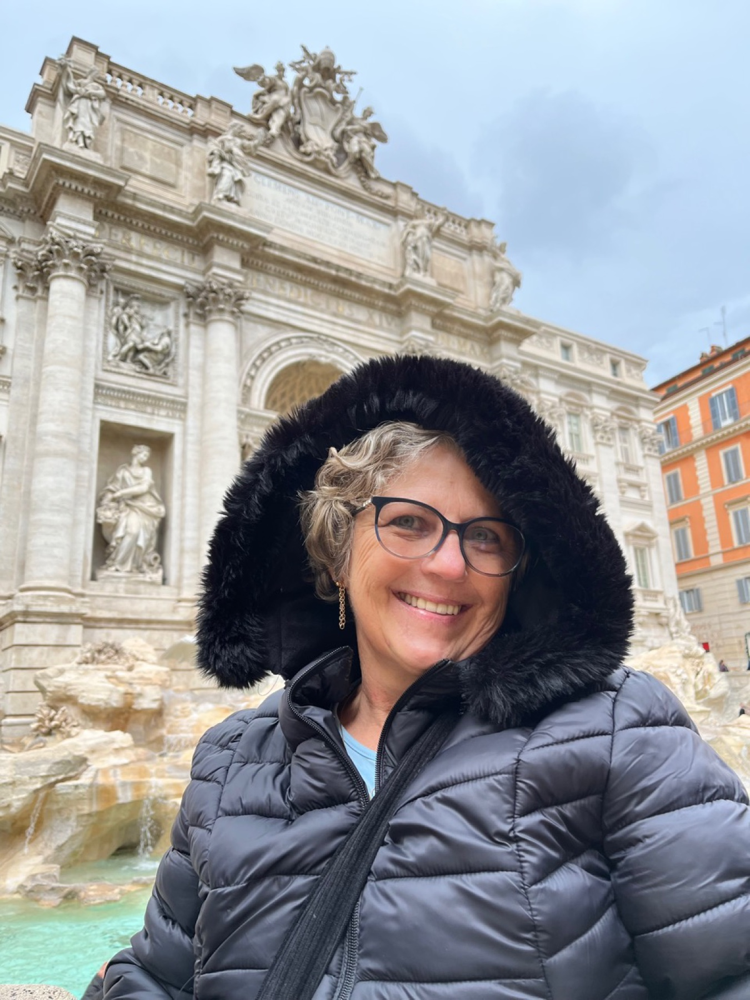
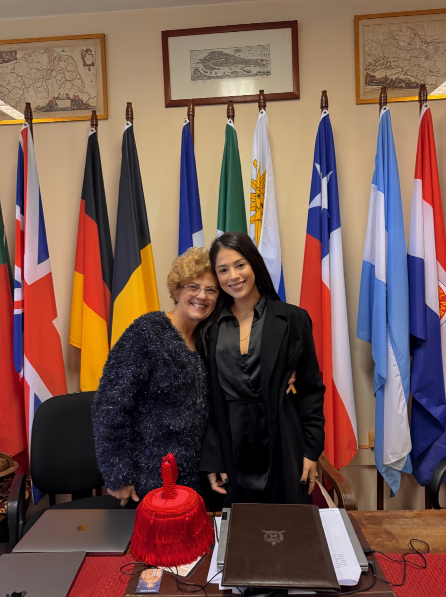
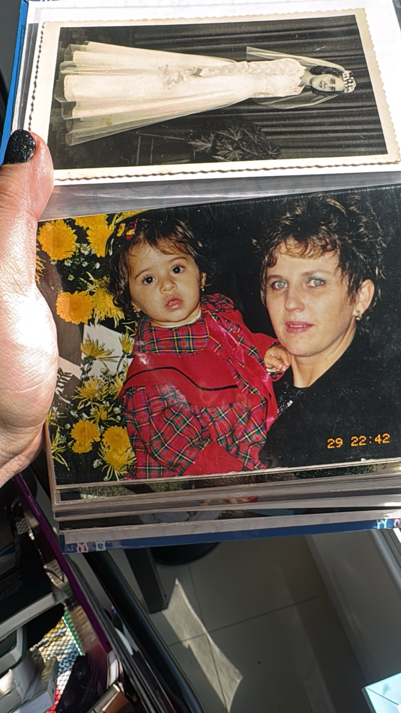
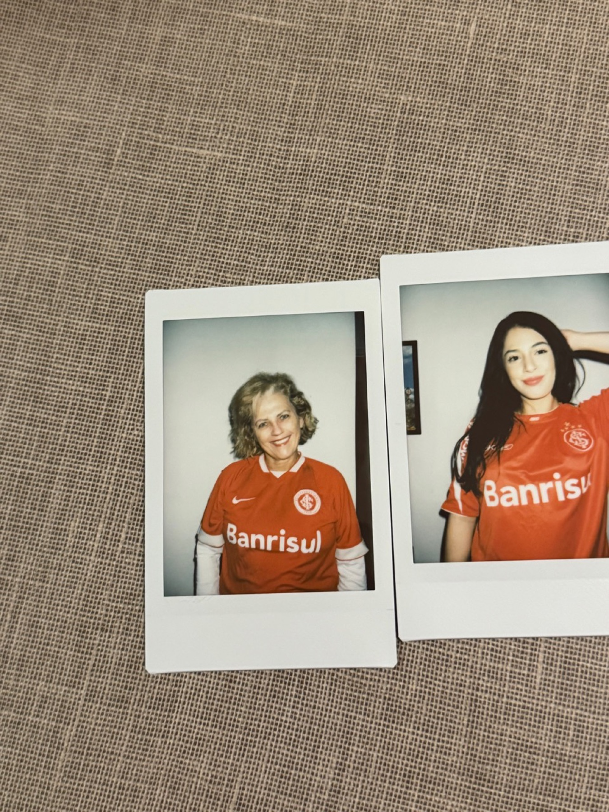

ana vanzin
ana vanzin
Para minha mãe
Suzane Beatriz Vanzin
Para a mulher que me ensinou, pela inteligência e pelo exemplo, que estudar também é um modo de permanecer esperançosa.
Tudo que eu faço no doutorado começa antes de mim: começa nela, no trabalho dela, na coragem dela, no modo como ela nunca deixou a vida me convencer a desistir.

Minha mãe é o motivo pelo qual eu faço doutorado.
Não porque o doutorado seja apenas um título, nem porque estudar seja uma linha reta. Eu estudo porque cresci vendo Suzane Beatriz Vanzin estudar. Vi a inteligência dela em movimento, a curiosidade dela, a disciplina silenciosa de quem trabalhava o dia todo e ainda fazia faculdade à noite. Vi, sobretudo, que esperança também se aprende: não como frase bonita, mas como prática diária.
Eu moro em Florianópolis e posso estudar porque ela fez sacrifícios que nem sempre cabem em uma biografia. Ela sustentou o que era necessário, abriu mão do que podia, carregou responsabilidades demais e, ainda assim, continuou me ensinando a olhar para frente. Foi mãe e pai a vida toda. Foi casa, impulso, proteção e caminho.
A minha vida intelectual tem a forma do amor dela.
Quando eu me entristeço, ela me mantém firme. Quando o mundo parece exigir dureza, ela me devolve alegria. Quando eu duvido, ela me lembra, pelo exemplo, que estudar é uma maneira de permanecer viva, lúcida e livre. Se hoje insisto na pesquisa, na escrita e no futuro, é porque ela insistiu primeiro em mim.
Esta página é pequena diante de tudo que ela fez. Mas é uma forma de dizer, publicamente, que nada disso nasceu sozinho. Há uma mulher por trás da minha possibilidade de estudar; há uma mãe por trás da minha coragem; há Suzane Beatriz Vanzin por trás da esperança que eu tento honrar.
quatro imagens de uma vida inteira



Mãe, tudo que sou carrega alguma coisa tua: a esperança, a inteligência, a teimosia boa de continuar, e a felicidade que tu me devolves quando eu esqueço onde deixei a minha.
com amor, Ana